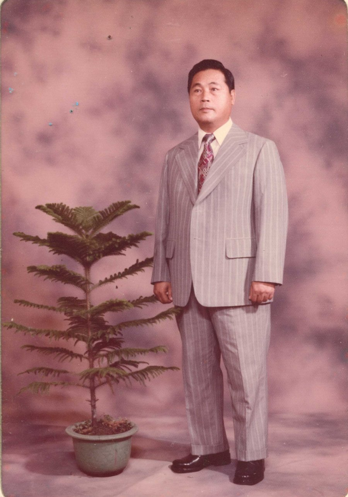

Before he ever built a school, Chen Yao-huo crossed the sea alone, as a boy, to find out what an education could be. The school he later raised in a Pingtung rice field carries everything he learned.

A boy on a ship to Japan
His parents had little schooling of their own, but they cared deeply about how their children were raised — loving them without spoiling them. "Send the young child traveling," the old saying went; and so his sister went to a midwifery school in Hakata, his brothers to a technical school in Oita. The young Chen Yao-huo chose the liberal arts, which meant middle school — and the only school willing to take an overseas student was Toyokuni Middle School, in Kyushu.
He traveled alone — by train from Kaohsiung up to Keelung, then three days and two nights by ship to the port of Moji. He had studied Japanese for six years in elementary school, yet using it for real, for the first time, he felt afraid. From Moji he rode the electric train and walked the last stretch to the school. The winters were colder than any in Taiwan, and a young boy far from home grew lonely — but classmates took him in and warmed those first uncertain days.
Where the school motto was born
Discipline was strict — no tea houses, no cinemas. Once he slipped into a film with his hat pulled low, and was found out and scolded the next morning. Yet two films stayed with him: "The Tree of Love" and "The Loyal 47 Ronin." He was moved above all by the loyalty of Oishi Kuranosuke — a "spirit of fidelity" that he understood as sincerity itself, a value that crosses every era and nation. Years later he wove it into his school's motto and song: Sincerity, Simplicity, Courage, Benevolence.
What he remembered most, though, were his teachers — the judo master, the civics teacher, the English teacher whose subject he loved best. Their warm care taught him by example. "Once a teacher, a father for life," he would say. Education, he came to believe, was never only the knowledge in a book; the character a student learns from a teacher matters more.
"Loyalty is sincerity — a value that crosses every era and nation. As long as one is human, it is a rule one must keep."「忠誠の精神とは『誠』であり、時代も国も超える、人として守るべき基本の徳である。」
A school built where it was needed most
After retiring from a post in the Taiwanese government, at the age of forty-five he founded Nan Jung in the rural township of Kanding. Junior highs were few then, entrance exams hard, and many children were simply left out. Taiwan in those years resembled the Japan in which his own alma mater had been founded — and his purpose echoed that of Toyokuni's founder, Nishida Kotaro, who had built a school at thirty-three for the children others had no room for.

He was, his daughter Chen Chun-shih said, "a resolute, plain-spoken man, close to benevolence." After one ceremony he confessed, "I'm really not good at speaking." For forty years he poured himself into the school — even mortgaging and selling family property to keep its doors open — and was honored with the nation's highest award for private education. The school he raised in a rice field still stands for everything he believed.
← Back学校をつくるよりもずっと前、陳耀火少年はたった一人で海を渡り、「教育とは何か」を確かめにいきました。のちに屏東の田園に育てた学校は、そのとき彼が学んだすべてを受け継いでいます。
日本へ渡る船の上で
両親自身は十分な教育を受けていませんでしたが、子の育て方には深く心を砕き、可愛がりながらも甘やかしませんでした。「かわいい子には旅をさせよ」——姉は博多の助産師学校へ、兄たちは大分の工業学校へ。陳耀火少年は文科を選び、それには中学が必要でした。そして海外からの留学生を受け入れてくれたのは、九州の豊国中学だけでした。
彼は一人で旅をしました。高雄から汽車で基隆へ上り、そこから三日二晩の船旅で門司港へ。小学校で六年間日本語を学んでいたとはいえ、実際に使うのは初めてで、胸の内は心細さでいっぱいでした。門司から電車に乗り、最後は歩いて学校へ。冬は台湾よりずっと寒く、故郷を離れた少年は寂しさを募らせましたが、同級生たちが温かく迎え、不安な日々を支えてくれました。
校訓が生まれたところ
規律は厳しく、茶館も映画館も禁止。一度、帽子を目深にかぶって映画館に忍び込み、翌朝には呼び出されて叱られました。それでも二本の映画が心に残ります。「愛染かつら」と「忠臣蔵」。とりわけ大石内蔵助の忠義——「忠誠の精神」に深く動かされました。それは彼にとって「誠」そのものであり、時代も国も超える価値でした。のちに彼はそれを校訓と校歌に織り込みます。「誠・樸・勇・仁」と。
けれども彼が最も覚えていたのは、先生方のことでした。柔道の先生、公民の先生、そして彼が一番好きだった英語の先生。その温かなまなざしが、身をもって彼を教えました。「一日でも師は、一生の父」と彼は語ります。教育とは決して書物の知識だけではない——先生から学ぶ品格こそが大切なのだ、と彼は信じるようになりました。
陳耀火・自述より陳耀火・自述より
最も必要とされる場所に
台湾の官職を退いたのち、四十五歳で、農村・崁頂に南榮を創立しました。当時、中学は数少なく、入学試験は難しく、多くの子どもが取り残されていました。その頃の台湾は、彼の母校が創立された頃の日本に似ていました。そして彼の志は、三十三歳で、行き場のない子どもたちのために学校を建てた豊国の創立者・西田幸太郎の志と、確かに響き合っていたのです。
娘の陳純適は、父をこう評します。「剛毅木訥、仁に近き人」。ある式典のあと、彼は「私は本当に口下手で」と漏らしました。四十年にわたり学校に身を捧げ——家屋敷を抵当に入れ、売り払ってまで学校の扉を開きつづけ——私学教育における国家最高の栄誉を受けました。彼が田園に育てた学校は、今も、彼が信じたすべてを体現しています。
← 戻る